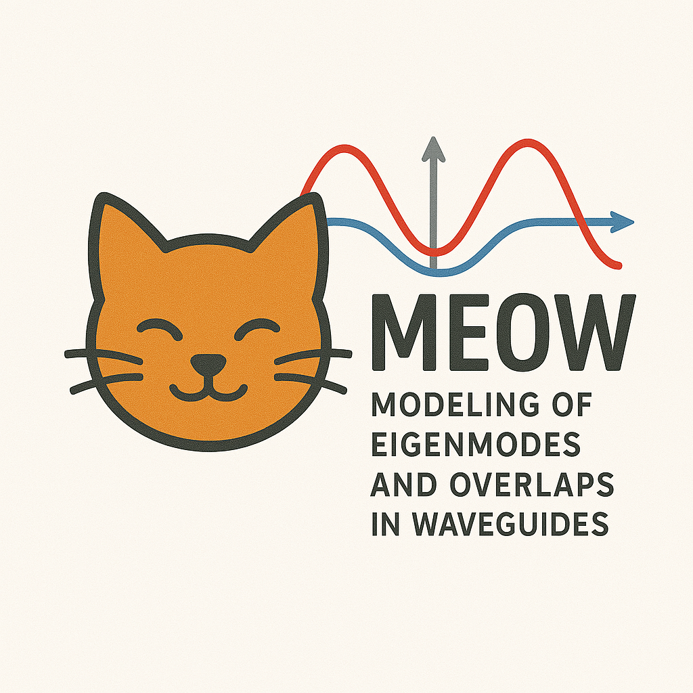

meow
Contents
meow#
Modeling of Eigenmodes and Overlaps in Waveguides

A simple electromagnetic EigenMode Expansion (EME) tool for Python.
Installation#
pip install meow-sim
Documentation#
Credits#
DALL-E: “a drawing of a kitten with laser eyes walking towards me” (logo)
Tidy3D: meow uses the free FDE mode solver from Tidy3D.
SAX: meow uses SAX as its circuit simulator when cascading the overlap S-matrices.
klujax: Although technically an optional backend for SAX, klujax will significantly speed up the final S-matrix calculation of your structures.
EMEPy: an excellent alternative python-based EME solver with optional neural network mode solver.
Rigorous and efficient modeling of wavelength scale photonic components: PhD thesis of Peter Bienstman.
Contents